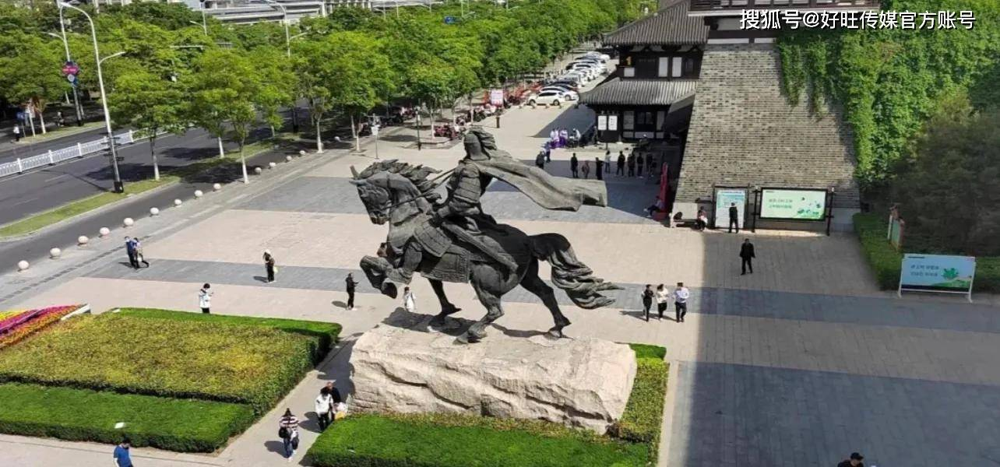
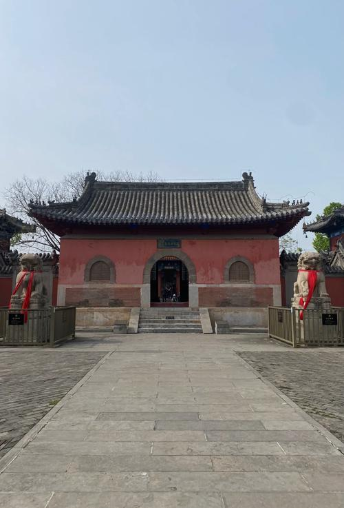

OUR PHOTOS
婚纱照
每一帧，都是我们的故事


Wedding Invitation
2026 · 05 · 02
&
诚 · 邀 · 您 · 出 · 席
WEDDING DETAILS
OUR PHOTOS
每一帧，都是我们的故事
TRAVEL INFO
方便您的出行安排
🚄 出行方式
🏨 住宿地址
💡 温馨提示
SHUYANG CUISINE
本地人私藏推荐
🥩 酸菜羊肉
沭阳特色，酸菜解腻、羊肉鲜嫩，酸香开胃，冬季必吃，是本地人最爱的家常硬菜之一。
🥗 豆芽牛肉
豆芽爽脆、牛肉鲜香，快炒出锅镬气十足，是沭阳餐桌上常见的地道小炒，简单却回味无穷。
🍗 素鸡饼（泗阳膘鸡）
泗阳、沭阳一带传统名菜，猪肉与鸡肉混制，红白相间、口感软糯，宴席必备，逢年过节必备礼品。
🍜 宿迁老式米线
宿迁本地特色米线，汤底醇厚、配料丰富，是早餐和下午茶的常见选择，街头小店最地道。
🥟 豆腐卷
外皮煎至金黄酥脆，豆腐馅鲜嫩入味，沭阳街头常见的小吃，物美价廉，趁热吃口感最佳。
🥞 潮牌（烧饼）
沭阳特色烧饼，刚出炉时酥脆喷香。推荐加辣条一起吃，别有一番风味。可在小红书搜索"沭阳潮牌"。
🌯 小饼夹肉 ⭐推荐
沭阳本地人都知道！推荐司勇小饼夹肉（沭阳连锁品牌），软面饼夹上秘制卤肉，饼软肉香，一口下去超级满足。
SUQIAN CUISINE
淮扬风味 · 人间烟火
💡 以上美食信息可小红书搜索确认，部分店铺节假日可能休息，建议提前查询。
SUQIAN SCENERY
西楚故里 · 项王故土

🏛 项王故里
西楚霸王项羽故里，中国最大西楚文化建筑群。大门外项羽骑马雕像庄严肃穆。外面打卡拍照即可，景区可自行决定是否进入。
外面打卡即可🌲 三台山森林公园
国家森林公园，自然风光优美，森林覆盖率高，四季皆宜，秋季红叶尤美。是宿迁人休闲踏青的好去处。
自然风光🌊 骆马湖
宿迁人民的"母亲湖"，江苏四大淡水湖之一，湖面开阔、风景秀丽，傍晚湖风习习。当地人调侃：官老爷瑟瑟发抖的地方。
湖滨风光
🏯 乾隆行宫
乾隆皇帝南巡时修建的行宫遗迹，建筑精美，历史悠久。喜欢历史古迹的朋友不要错过，距骆马湖不远可一并游览。
历史古迹💡 温馨建议
时间充裕的话，可坐大巴或顺风车去隔壁淮安游玩
淮安景点丰富、美食众多，值得一去！
YOUR PRESENCE
感谢您见证我们人生中最重要的时刻
请于百忙之中回复您的出席信息
数据将保存到腾讯问卷，随时可查看统计